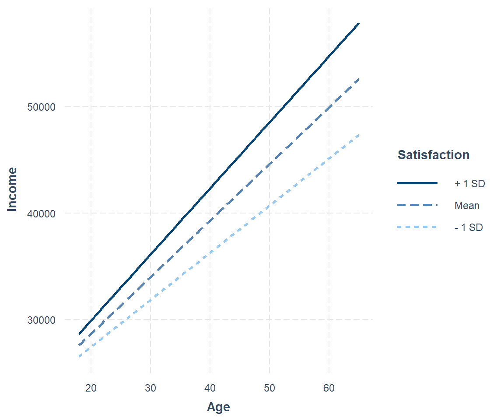

Chapter 10 Logistic Regression
Logistic regression is the appropriate regression analysis to conduct when the dependent variable is dichotomous (binary).
10.1 Minimal Example
10.1.1 Think inside the box
The table contains data on the relationship between hours of study and the outcome of an exam (pass/fail) sorted ascending for study hours. The pass outcome is coded 1 for "Yeah, I passed the exam" and 0 for "I'll be back".
Linear regression is agnostic to the structure of the data. lm() fits a linear model to the data. Logistic regression acknowledges the floor and ceiling of values between 0 and 1. It squeezes the line to a squiggle inside the box. Well, the x-axis don't necessarily have this restriction.

It is usually difficult to model a variable which has restricted range, such as probability. Get around the restricted range problem with a transformation.
10.1.2 From probability to odds
Everybody has a good sense for probability. Not so for odds.
- Let’s say that the probability to pass the exam is \(0.8 = 80\%\).
- Then the probability of failure is \(1 – 0.8 = 0.2 = 20\%\).
The odds of passing the exam are defined as the ratio of the probabilities: \(\text{odds} = \frac{0.8}{0.2} = 4\). That is to say that the odds of passing are 4 to 1. Odds provide a measure of the likelihood of a particular outcome.
Probability is naturally restricted between 0 and 1, what about odds?
Odds range from 0 to positive infinity.
The transformation from probability to odds is a monotonic transformation, meaning the odds increase as the probability increases or vice versa.
10.2 Application: Titanic Survival
10.2.0.1 Data Management
Please register at Kaggle. Go to https://www.kaggle.com/c/titanic/data and download the datasets (train.csv, test.csv, gender_submission.csv). Put them in your working directory. The following merge commands should work.
titanic <- read.csv("./data/titanic.csv")
titanic <- titanic[,-1]Let's check the number of missing values per variable:
## missings per variable n = 1309
sapply(X = titanic, FUN = function(x) sum(is.na(x)))
#> PassengerId Pclass Name Sex Age SibSp
#> 0 0 0 0 263 0
#> Parch Ticket Fare Cabin Embarked Survived
#> 0 0 1 1014 2 0There are 2 missing values in Embarked and 263 in Age. The most missings fall upon Cabin though. Cabin information is not a very useful predictor for survival, thus we can remove this information for our analysis.
Conduct a complete case analysis. The dataset should look like this (n = 1043):
titanic <- titanic %>% select(!Cabin)
## ## n = 1043
## titanic <- titanic %>%
## filter(Age > 0)
## complete cases n = 1043
titanic <- titanic[complete.cases(titanic), ]
glimpse(titanic)
#> Rows: 1,043
#> Columns: 11
#> $ PassengerId <int> 892, 893, 894, 895, 896, 897, 898, 899, 900, 901, 903, 904…
#> $ Pclass <int> 3, 3, 2, 3, 3, 3, 3, 2, 3, 3, 1, 1, 2, 1, 2, 2, 3, 3, 3, 1…
#> $ Name <chr> "Kelly, Mr. James", "Wilkes, Mrs. James (Ellen Needs)", "M…
#> $ Sex <chr> "male", "female", "male", "male", "female", "male", "femal…
#> $ Age <dbl> 34.5, 47.0, 62.0, 27.0, 22.0, 14.0, 30.0, 26.0, 18.0, 21.0…
#> $ SibSp <int> 0, 1, 0, 0, 1, 0, 0, 1, 0, 2, 0, 1, 1, 1, 1, 0, 0, 1, 0, 1…
#> $ Parch <int> 0, 0, 0, 0, 1, 0, 0, 1, 0, 0, 0, 0, 0, 0, 0, 0, 0, 0, 0, 0…
#> $ Ticket <chr> "330911", "363272", "240276", "315154", "3101298", "7538",…
#> $ Fare <dbl> 7.8292, 7.0000, 9.6875, 8.6625, 12.2875, 9.2250, 7.6292, 2…
#> $ Embarked <chr> "Q", "S", "Q", "S", "S", "S", "Q", "S", "C", "S", "S", "S"…
#> $ Survived <int> 0, 1, 0, 0, 1, 0, 1, 0, 1, 0, 0, 1, 0, 1, 1, 0, 0, 1, 1, 0…## estimation
titanic_estimation <- titanic %>% select(!c(PassengerId, Name, Ticket))10.2.0.2 No Predictor Variables (1 pt)
There is no predictor, only the intercept (empty model):
\[logit (p) = \beta_0\]
library(tidyverse)
logistic0 = glm(Survived ~ 1, family = binomial(link = 'logit'), data = titanic)
logistic0
#>
#> Call: glm(formula = Survived ~ 1, family = binomial(link = "logit"),
#> data = titanic)
#>
#> Coefficients:
#> (Intercept)
#> -0.4143
#>
#> Degrees of Freedom: 1042 Total (i.e. Null); 1042 Residual
#> Null Deviance: 1402
#> Residual Deviance: 1402 AIC: 1404Please recalculate the intercept from model logistic0, i.e. the value -0.4142616.
Use the probability of survival from titanic data (check the count of titanic$Survived). Store and show the probability of survival in a vector named survive_p. Store and show the odds of survival as survive_odds. Calculate and store the logodds of survival as survive_logodds (this should be equivalent to the empty model intercept).
##table(titanic$Survived)
##table(titanic$Survived)[1]
##table(titanic$Survived)[2]
survive_p <- table(titanic$Survived)[2]/(table(titanic$Survived)[2]+table(titanic$Survived)[1])
survive_odds <- survive_p/(1-survive_p)
survive_logodds <- log(survive_odds)
## ## 38.9% survived
## 398/(398+623)
## ## The odds are
## 0.3898139/ (1-0.3898139)
## ## 0.6229509 and the log of the odds (logit) is
## log(0.6388443)
## ## -0.4480945, exactly what the regression intercept is10.2.0.3 Single Dichotomous Predictor (1 pt)
Now include gender as an explanatory variable. We expect being male reduces the probability of surviving.
\[logit (p) = \beta_0 + \beta_1 \cdot sex\]
logistic1 = glm(Survived ~ Sex, family = binomial(link = 'logit'), data = titanic)
logistic1
#>
#> Call: glm(formula = Survived ~ Sex, family = binomial(link = "logit"),
#> data = titanic)
#>
#> Coefficients:
#> (Intercept) Sexmale
#> 1.616 -3.418
#>
#> Degrees of Freedom: 1042 Total (i.e. Null); 1041 Residual
#> Null Deviance: 1402
#> Residual Deviance: 882.6 AIC: 886.6The dummy variable behaves as in the linear model:
- The logodds of survival for men are: -1.8024548
- The logodds of survival for women are: 1.6156685
Please calculate the logodds for men based on the frequencies of male and female survival:
table(titanic$Survived, titanic$Sex)
#>
#> female male
#> 0 64 564
#> 1 322 93Please use a programmatic approach in R to access those values. All calculations and results need to be shown.
## odds ratio: odds for female to the odds for male: 2.876543/0.2329059 = 12.35067 == (233*468)/(81*109)
## the odds for females are about 1235% higher than the odds for males
## odds ratio: odds for male to the odds for female: 0.2329059/2.876543 = 0.08096729
## the odds for male are about 8% of the odds for females
## The coefficient for female is the log of odds ratio between the female group and male group: log(12.35067) = 2.51371
## The coefficient for male is the log of odds ratio between the male group and female group: log(0.08096729) = -2.51371
###### titanic full data
table(titanic$Survived, titanic$Sex)
## male survival: (~ 14%)
table(titanic$Survived, titanic$Sex)[2,2]/(table(titanic$Survived, titanic$Sex)[2,2] + table(titanic$Survived, titanic$Sex)[1,2])
## ## female survival: (~ 83%)
table(titanic$Survived, titanic$Sex)[2,1]/(table(titanic$Survived, titanic$Sex)[2,1] + table(titanic$Survived, titanic$Sex)[1,1])
## male odds:
table(titanic$Survived, titanic$Sex)[2,2] / table(titanic$Survived, titanic$Sex)[1,2]
## female odds:
table(titanic$Survived, titanic$Sex)[2,1] / table(titanic$Survived, titanic$Sex)[1,1]
## logodds male
log(table(titanic$Survived, titanic$Sex)[2,2] / table(titanic$Survived, titanic$Sex)[1,2])
## logodds female
log(table(titanic$Survived, titanic$Sex)[2,1] / table(titanic$Survived, titanic$Sex)[1,1])
## odds ratio: odds for male to the odds for female: 0.03277389
(table(titanic$Survived, titanic$Sex)[2,2] / table(titanic$Survived, titanic$Sex)[1,2])/(table(titanic$Survived, titanic$Sex)[2,1] / table(titanic$Survived, titanic$Sex)[1,1])
## odds ratio: odds for female to the odds for male: 30.5121
(table(titanic$Survived, titanic$Sex)[2,1] / table(titanic$Survived, titanic$Sex)[1,1])/(table(titanic$Survived, titanic$Sex)[2,2] / table(titanic$Survived, titanic$Sex)[1,2])10.2.0.4 Effect plot (1 pt)
Use a nested version of plot() on allEffects() on the logistic1 model (effects package).
library(effects)
plot(allEffects(logistic1))
What kind of effect does this plot show? And how did the effects package make those estimates? Inverse the logit function on the logodds estimates. Define the function invLogit():
invLogit <- function(x) exp(x)/(1 + exp(x))Apply invLogit() on the logodds for males. Show that the results are equivalent to the numbers from the effect plot.
invLogit <- function(x) exp(x)/(1 + exp(x))
## logodds male
invLogit(log(table(titanic$Survived, titanic$Sex)[2,2] / table(titanic$Survived, titanic$Sex)[1,2]))
## logodds female
invLogit(log(table(titanic$Survived, titanic$Sex)[2,1] / table(titanic$Survived, titanic$Sex)[1,1]))10.2.0.5 Chi Square Test For Independence (1 pt)
The epitab package can improve the contingency tables of survival by gender. From looking at this table, a lot men died (n = 564) and a lot women survived (n = 322). Those who survied have been about 77% female, those who deceased are about 90% male.
library(epitab)
titanic_fct <- titanic %>%
mutate(Survived_fct = factor(Survived))
## levels = c("Deceased", "Survived")
## levels(titanic_fct$Survived_fct)
tab <- contingency_table(list("Sex"='Sex'),
outcomes=list('Survival'='Survived_fct'), ## need to be factors
crosstab_funcs=list(freq()),
data=titanic_fct)
#neat_table(tab, format = c("html"))The \(\chi^2\) test is an alternative to test the relationship between two categorical variables.
chisq.test(titanic$Survived, titanic$Sex)
#>
#> Pearson's Chi-squared test with Yates' continuity correction
#>
#> data: titanic$Survived and titanic$Sex
#> X-squared = 484.02, df = 1, p-value < 2.2e-16Please recalculate the test statistic, i.e. the value:
chisq.test(titanic$Survived, titanic$Sex)$statistic
#> X-squared
#> 484.0245from the observed values. The formula for \(X^2\) is:
addmargins(table(titanic$Survived, titanic$Sex))\(X^2 = \sum_i \frac{(O_i-E_i)^2}{E_i}\),
where \(O_i\) is the observed frequency and \(E_i\) is the expected frequency. The following steps are suggested.
## Step 1: Store the observed values in a table
tab_obs <- table(titanic$Survived, titanic$Sex)
## Step 2: Calculate expected absolute frequency
library("DescTools")
tab_exp <- ExpFreq(XYZ, freq ="abs")
## Step 3: Subtract the expected value from the observed value (and square differences)
## ...
## Step 4: Divide by expected values
## ...
## Step 5: Sum up all
## ... tab_margins <- addmargins(table(titanic$Survived, titanic$Sex))
tab_obs <- table(titanic$Survived, titanic$Sex)
## Step 1: Expected absolute frequency
library("DescTools")
tab_exp <- ExpFreq(table(titanic$Survived, titanic$Sex), freq ="abs")
## Step 2: Subtract the expected value from the observed value (and square differences)
(tab_obs-tab_exp)^2
## Step 3: Divide by expected values
(tab_obs-tab_exp)^2/tab_exp
## Step 4: Sum up all
tab_temp <- (tab_obs-tab_exp)^2/tab_exp
tab_temp[1,1] + tab_temp[1,2] + tab_temp[2,1] + tab_temp[2,2]10.3 Addons
10.3.0.1 Some Are More Equal Than Others
Let's extend the group analysis to multiple categories using the Pclass variable. The passenger class represents the socio-economic status of people. We hypothesize that people with more money used their influence to get into one of the lifeboats. First, the contingency table of the situation:
tab <- contingency_table(list("Passenger Class"='Pclass'),
outcomes=list('Survival'='Survived_fct'), ## need to be factors
crosstab_funcs=list(freq()),
data=titanic_fct)
neat_table(tab, format = c("html"))In first class, more people survived (n=168) than died (n=114) whereas this not true for the third class (365 died and 135 survived). All men may be created equal, but some are more equal than others. The logistic regression with one categorical variable is straightforward:
logistic2 = glm(Survived ~ Pclass, family = binomial(link = 'logit'), data = titanic)
logistic2
#>
#> Call: glm(formula = Survived ~ Pclass, family = binomial(link = "logit"),
#> data = titanic)
#>
#> Coefficients:
#> (Intercept) Pclass
#> 1.0860 -0.6921
#>
#> Degrees of Freedom: 1042 Total (i.e. Null); 1041 Residual
#> Null Deviance: 1402
#> Residual Deviance: 1320 AIC: 1324The lower your socio-economic status, the less survival can you expect.
10.3.0.2 The Cheaper The Deader?
We have another option to investigate the effect of socio-economic class, the Fare variable (ticket price). The prices of tickets on the Titanic in 1912 ranged from £870 or $4,350 for a first-class parlor suite to a maximum of £8 or $40 for a third-class passage, according to The Washington Times. A century later, in 2012, those ticket prices equaled a range of $50,000 to $460.
logistic3 = glm(Survived ~ Fare, family = binomial(link = 'logit'), data = titanic)
logistic3
#>
#> Call: glm(formula = Survived ~ Fare, family = binomial(link = "logit"),
#> data = titanic)
#>
#> Coefficients:
#> (Intercept) Fare
#> -0.80666 0.01109
#>
#> Degrees of Freedom: 1042 Total (i.e. Null); 1041 Residual
#> Null Deviance: 1402
#> Residual Deviance: 1337 AIC: 1341The coefficient and intercept estimates give us the following equation:
\[ \text{logit}(p) = -0.80666 + 0.01109 \cdot \text{fare} \]
In this case, the estimated coefficient for the intercept is the log odds of a passenger with a fare of zero surviving the accident. Of course, there is nothing like a free lunch. So the intercept in this model corresponds to the log odds of survival when fare is at the hypothetical value of zero.
How do we interpret the slope coefficient for Fare? Let's fix Fare at some value, e.g. the mean which roughly equals 37 (rounded to 0 decimals). Then the conditional logit of surviving when the fare is equal to the mean is:
\[\begin{aligned} \text{logit}(p | \text{fare}=36) &= -0.3964565 \\ \text{logit}(p | \text{fare}=37) &= -0.38537 \\ \end{aligned}\]
We can examine the effect of a one-unit increase in fare by taking the difference of the two equations:
\[\text{logit}(p | \text{fare}=37) - \text{logit}(p | \text{fare}=36) = 0.0110866 \]
In other words, for a one-unit increase in the fare price, the expected change in log odds is 0.0110866. Can we translate this change in log odds to the change in odds? Indeed, we can. Recall that logarithm converts multiplication and division to addition and subtraction. Its inverse, the exponentiation converts addition and subtraction back to multiplication and division. If we exponentiate both sides of our last equation, we have the following:
\[ e^{\text{logit}(p | \text{fare}=37) - \text{logit}(p | \text{fare}=36)} = e^{0.0110866} = 1.011148 \]
So we can say for a one-unit increase in fare price, we expect to see about 1.1% increase in the odds of surviving. This 1.1% of increase does not depend on the value that fare is held at.
Information about Britain’s currency at that time.
Before Britain’s currency was in terms of pounds and pence, it was in terms of pounds, shillings and pennies e.g. £18 15s 9d. There were: 12 pennies per shilling and 20 shillings per pound.Can we get this information more directly? Yes, we can.
require(MASS)
exp(cbind(coef(logistic3), confint(logistic3)))
#> 2.5 % 97.5 %
#> (Intercept) 0.4463467 0.3780949 0.5250284
#> Fare 1.0111482 1.0080791 1.014508910.3.0.3 The Bigger Picture
First, we take another subset, since PassengerId, Name and Ticket are not good predictors.
logistic4 = glm(Survived ~ ., family = binomial(link = 'logit'), data = titanic[,-c(1,3,8)])
logistic4
#>
#> Call: glm(formula = Survived ~ ., family = binomial(link = "logit"),
#> data = titanic[, -c(1, 3, 8)])
#>
#> Coefficients:
#> (Intercept) Pclass Sexmale Age SibSp Parch
#> 5.352939 -1.024737 -3.685172 -0.035433 -0.314696 -0.117345
#> Fare EmbarkedQ EmbarkedS
#> 0.001863 -0.283354 -0.201081
#>
#> Degrees of Freedom: 1042 Total (i.e. Null); 1034 Residual
#> Null Deviance: 1402
#> Residual Deviance: 784.2 AIC: 802.2For example, increase one unit in age will decrease the log odd of survival by 0.0257; being a male will decrease the log odd of survival by 3.78 compared to female; and being in class2 will decrease the log odd of survival by 1.17, being in class3 will decrease the log odd of survival by 1.97.
Moreover, exponentiate the model coefficients can look at the result and interpret its meaning at a different angle. Below are table of the “odd ratio” value for each predictor coefficient relative to the survival and their respective 95% confident interval odd ratio value.
exp(cbind(OR = coef(logistic4)))
#> OR
#> (Intercept) 211.22820034
#> Pclass 0.35889085
#> Sexmale 0.02509285
#> Age 0.96518770
#> SibSp 0.73001047
#> Parch 0.88927819
#> Fare 1.00186428
#> EmbarkedQ 0.75325288
#> EmbarkedS 0.81784593Now, the result can be interpreted as: for a unit increase in age, the odds of surviving from the incident decrease by a factor of 0.96; and being a third class (class3), the odds of surviving decrease by a factor of 0.12, etc.
The logit model coefficients can be presented as odds ratios. But odds-ratios are often misinterpreted as if they were relative risks/probabilities. Nonetheless presenting odds-ratios is standard practice in the medical literature.
10.3.0.4 Marginal Effects
Marginal effects is a way of presenting results as differences in probabilities, which is more informative than odds-ratios and relative risk. For continuous variables this represents the instantaneous change given that the ‘unit’ may be very small. For binary variables, the change is from 0 to 1, so one ‘unit’ as it is usually thought.
In order to express the more intuitive change in the predicted probability that the outcome equals 1 requires conditioning on all other included variables (i.e., selecting a set of values for all righthand-side variables) and running that set of values through the link function to convert log-odds to probabilities, thus making the marginal effect (in probability terms) of one variable a function of all other variables included in the model.
Marginal effects show the change in probability when the predictor or independent variable increases by one unit.
library(margins)
summary(margins(logistic4))
#> factor AME SE z p lower upper
#> Age -0.0041 0.0008 -4.9223 0.0000 -0.0057 -0.0024
#> EmbarkedQ -0.0326 0.0561 -0.5816 0.5608 -0.1425 0.0773
#> EmbarkedS -0.0233 0.0283 -0.8233 0.4103 -0.0787 0.0321
#> Fare 0.0002 0.0002 0.8831 0.3772 -0.0003 0.0007
#> Parch -0.0134 0.0130 -1.0356 0.3004 -0.0389 0.0120
#> Pclass -0.1173 0.0167 -7.0181 0.0000 -0.1501 -0.0846
#> Sexmale -0.6601 0.0253 -26.0454 0.0000 -0.7098 -0.6105
#> SibSp -0.0360 0.0134 -2.6865 0.0072 -0.0623 -0.0097knitr::include_graphics("images/titanic.png")
Figure 10.1: Figure 4: RMS Titanic.
10.4 Motivation
A sports doctor routinely measures the muscle percentages of his clients. He also asks them how many hours per week they typically spend on training. Our doctor suspects that clients who train more are also more muscled. Furthermore, he thinks that the effect of training on muscularity declines with age. In multiple regression analysis, this is known as a moderation or interaction effect. The figure below illustrates it.

Imagine a 34 year old student and a 49 year old professor who work out at McFit (Lenne Passage). They exercise exactly the same amount of time per week (3 day split), the same exercises (McFit usually provides multiple identical machines next to each other), the same time of the day, they take the nutritional supplements, etc. etc. everything else is constant. Do you think they will experience different results in terms of muscle gains?
In mathematical terms the interaction is a multiplication:
\[ muscle = training + age + training*age \]
10.5 Load and Merge
We analyze the details of the weight-height relationship.
library(haven)
pequiv <- read_dta("./SOEPteaching/pequiv.dta", col_select = c("pid", "syear", "d11101", "d11102ll", "l11102", "d11104"))
health <- read_dta("./SOEPteaching/health.dta", col_select = c("pid", "syear", "height", "weight"))
master <- merge(pequiv, health, by = c("pid", "syear"))10.6 Data Manipulation
Drop Stata labels, rename the variables, and create factor variables.
library(sjlabelled)
soep <- remove_all_labels(master)
library(tidyverse)
soep <- soep %>%
rename(region = l11102,
marital = d11104,
age = d11101,
gender = d11102ll) %>%
filter(height > 0, weight > 0, marital > 0) %>%
mutate(marital = factor(marital, levels = c(1, 2, 3, 4, 5)),
region = factor(region, levels = c(1, 2)),
gender = factor(gender, levels = c(1, 2)))
levels(soep$marital) = c("married", "single", "widowed", "divorced", "separated")
levels(soep$region) = c("west", "east")
levels(soep$gender) = c("male", "female")Inspect the data (check for missings and outliers):
library(gtsummary)
tbl_summary(soep[-c(1,2)])| Characteristic | N = 103,9501 |
|---|---|
| gender | |
| male | 49,646 (48%) |
| female | 54,304 (52%) |
| age | 47 (35, 62) |
| marital | |
| married | 61,332 (59%) |
| single | 25,921 (25%) |
| widowed | 6,205 (6.0%) |
| divorced | 8,010 (7.7%) |
| separated | 2,482 (2.4%) |
| region | |
| west | 80,387 (77%) |
| east | 23,563 (23%) |
| height | 171 (165, 178) |
| weight | 75 (65, 86) |
| 1 n (%); Median (IQR) | |
10.7 Simple linear model
You learned that simple regression is almost identical to correlation between two variables.
simple <- lm(weight ~ height, data=soep)
simple
#>
#> Call:
#> lm(formula = weight ~ height, data = soep)
#>
#> Coefficients:
#> (Intercept) height
#> -78.4362 0.903410.8 Multiple regression with control
10.8.1 Regression model
Here comes multiple regression. We have seen this before:
multiple <- lm(weight ~ height + gender, data=soep)
multiple
#>
#> Call:
#> lm(formula = weight ~ height + gender, data = soep)
#>
#> Coefficients:
#> (Intercept) height genderfemale
#> -37.567 0.684 -6.18810.8.2 Visualization (parallel slopes)
We have seen parallel slopes before:

Conclusion: The fundamental truth is that the effect of body height on body weight is identical across gender (i.e. for males and females). Males and female are equipped (by nature) with a different starting body weight on average.
10.9 Multiple regression with moderator
10.9.1 Interaction (dummy * dummy)
interact0a <- lm(weight ~ region*gender, data=soep)
summary(interact0a)
#>
#> Call:
#> lm(formula = weight ~ region * gender, data = soep)
#>
#> Residuals:
#> Min 1Q Median 3Q Max
#> -54.401 -9.987 -2.183 7.599 165.599
#>
#> Coefficients:
#> Estimate Std. Error t value Pr(>|t|)
#> (Intercept) 84.40098 0.07542 1119.145 < 2e-16 ***
#> regioneast -0.41388 0.15848 -2.612 0.00901 **
#> genderfemale -15.21763 0.10435 -145.826 < 2e-16 ***
#> regioneast:genderfemale 1.50228 0.21919 6.854 7.24e-12 ***
#> ---
#> Signif. codes: 0 '***' 0.001 '**' 0.01 '*' 0.05 '.' 0.1 ' ' 1
#>
#> Residual standard error: 14.78 on 103946 degrees of freedom
#> Multiple R-squared: 0.2022, Adjusted R-squared: 0.2021
#> F-statistic: 8780 on 3 and 103946 DF, p-value: < 2.2e-16First glimpse at the margins package.
library(margins)
#margins(interact0a)
summary(margins(interact0a, at = list(region = c("west", "east"))))
#> factor region AME SE z p lower upper
#> genderfemale 1.0000 -15.2176 0.1044 -145.8260 0.0000 -15.4222 -15.0131
#> genderfemale 2.0000 -13.7153 0.1928 -71.1532 0.0000 -14.0931 -13.3376
#> regioneast 1.0000 0.3709 0.1095 3.3879 0.0007 0.1563 0.5855
#> regioneast 2.0000 0.3709 0.1095 3.3879 0.0007 0.1563 0.5855Interaction plot from the interactions package.
# Dedicated package makes everything easier.
library(interactions)
cat_plot(interact0a, pred = gender, modx = region)
10.9.2 Interaction (categorical * dummy)
interact0b <- lm(weight ~ marital*gender, data=soep)
interact0b
#>
#> Call:
#> lm(formula = weight ~ marital * gender, data = soep)
#>
#> Coefficients:
#> (Intercept) maritalsingle
#> 85.92239 -5.38961
#> maritalwidowed maritaldivorced
#> -4.34815 -0.08313
#> maritalseparated genderfemale
#> -1.25931 -15.50285
#> maritalsingle:genderfemale maritalwidowed:genderfemale
#> 0.77077 4.85503
#> maritaldivorced:genderfemale maritalseparated:genderfemale
#> 0.44475 1.1325910.9.3 Interaction (continuous * dummy)
Note that R automatically adds main effects if you use multiplication operator:
Thus \[ height * female \]
translates to
\[ height + female + height*female \]
interact1 <- lm(weight ~ height*gender, data=soep)
interact1
#>
#> Call:
#> lm(formula = weight ~ height * gender, data = soep)
#>
#> Coefficients:
#> (Intercept) height genderfemale
#> -58.7988 0.8031 37.5708
#> height:genderfemale
#> -0.255310.9.4 Visualization (non-parallel slopes)
library(interactions)
interact_plot(interact1, pred = height, modx = gender,
main.title = "Each group has a different slope.")
Conclusion: The fundamental truth is that the effect of body height on body weight is similar but not identical between males and females. A boy and and girl of exact same body height who experience growth by 1cm are expected to end up with different weight gains. There is effect heterogeneity.
10.9.5 Interaction (continuous * continuous)
interact2 <- lm(weight ~ height*age, data=soep)
interact2
#>
#> Call:
#> lm(formula = weight ~ height * age, data = soep)
#>
#> Coefficients:
#> (Intercept) height age height:age
#> -80.661777 0.861444 -0.213555 0.002397The interaction of two continuous variables is harder to interpret. We cannot set the moderator (age) equal to zero, since there is no person with an age of zero (in SOEP).
10.9.6 Visualization (non-parallel slopes)
There are conventions to help you choose the best values of the continuous moderator for plotting predicted values. But these conventions don't always work in every situation. For example, one convention suggested by Cohen and Cohen and popularized by Aiken and West is to use three values of the moderator: the mean, the value one standard deviation above, and the value one standard deviation below the mean. This is what interact_plot() does by default.
interact_plot(interact2, pred = height, modx = age)
This shows you that interaction between two continuous variables works basically the same way as for a categorical and continuous variable. An interaction says that there's not a fixed offset: you need to consider both values of x1 and x2 simultaneously in order to predict y.
You can see that even with just two continuous variables, coming up with good visualizations are hard. But that's reasonable: you shouldn't expect it will be easy to understand how three or more variables simultaneously interact! But again, we're saved a little because we're using models for exploration, and you can gradually build up your model over time. The model doesn't have to be perfect, it just has to help you reveal a little more about your data.
Conclusion: The fundamental truth is that the effect of body height on body weight is identical across age. In the regression output age has non-significant coefficients. The interaction plot is suggesting that there is no effect heterogeneity with respect to age (multiple parallel slopes).
10.10 Marginal Effects
Now we better understand that the effect of our main explanatory variable might be increased or decreased by another variable. Still, a question is open to answer: What exactly is the effect of our main explanatory variable in the interaction model?
In OLS framework regression coefficients have direct interpretation as unconditional marginal effects: predicted change in y due to a unit change in x. Interactions or higher-order terms (e.g. age square) make interpretation difficult or impossible. For interpretation of the effect and the statistical significance, we have to investigate all interacted variables at the same time. Marginal effects are partial derivatives of the regression equation with respect to a variable from the model.
\[ \begin{align} weight &= \beta_0 + \beta_1 \cdot height \tag{simple regression} \\ \frac{\partial weight}{\partial height} &= \beta_1 \tag{unconditional effect} \\ weight &= \beta_0 + \beta_1 \cdot height + \beta_2 \cdot female + \beta_3 \cdot height \cdot female \tag{moderated regression} \\ \frac{\partial weight}{\partial height} &= \beta_1 + \beta_3 \cdot female \tag{conditional effect} \\ \end{align} \]
library(stargazer)
stargazer(simple, interact1, type="text")
#>
#> =================================================================================
#> Dependent variable:
#> -------------------------------------------------------------
#> weight
#> (1) (2)
#> ---------------------------------------------------------------------------------
#> height 0.903*** 0.803***
#> (0.005) (0.008)
#>
#> genderfemale 37.571***
#> (2.125)
#>
#> height:genderfemale -0.255***
#> (0.012)
#>
#> Constant -78.436*** -58.799***
#> (0.799) (1.508)
#>
#> ---------------------------------------------------------------------------------
#> Observations 103,950 103,950
#> R2 0.267 0.289
#> Adjusted R2 0.266 0.289
#> Residual Std. Error 14.170 (df = 103948) 13.955 (df = 103946)
#> F Statistic 37,767.980*** (df = 1; 103948) 14,056.330*** (df = 3; 103946)
#> =================================================================================
#> Note: *p<0.1; **p<0.05; ***p<0.01For the simple regression, the coefficient is identical (unconditional).
library(margins)
margins(simple)
#> height
#> 0.903410.10.1 Marginal effects at representatives (TASK)
We can use representative values which we literally plug in the equation. These are the effects for each group (what we have seen before in the interaction plot):
\[ \begin{align} weight &= \beta_0 + \beta_1 \cdot height + \beta_2 \cdot female + \beta_3 \cdot height \cdot female \tag{interact1} \\ \frac{\partial weight}{\partial height} &= \beta_1 + \beta_3 \cdot female \tag{conditional effect} \\ \end{align} \]
Here is the R code:
margins(interact1, at = list(gender = c("male", "female")))
#> at(gender) height genderfemale
#> male 0.8031 -6.224
#> female 0.5479 -6.224Please calculate the MER of height in interact1 for the two gender programmtic in R.
10.10.2 Marginal effects at the mean (TASK)
Plugging in values is not always as easy as it seems to be. What should we use for age? Values as 0, 1 or 2 does not makes sense for age. Okay, we could use some representative age, e.g. 30 and 40. But what is our theoretical justification to report the effect for age 30 and not age 31? Another strategy is to use mean values of the variables.
\[ \begin{align} weight &= \beta_0 + \beta_1 \cdot height + \beta_2 \cdot age + \beta_3 \cdot height \cdot age \tag{interact2} \\ \frac{\partial weight}{\partial height} &= \beta_1 + \beta_3 \cdot age \tag{conditional effect} \\ \end{align} \]
library("stargazer")
stargazer(simple, interact2, type="text")
#>
#> =================================================================================
#> Dependent variable:
#> -------------------------------------------------------------
#> weight
#> (1) (2)
#> ---------------------------------------------------------------------------------
#> height 0.903*** 0.861***
#> (0.005) (0.013)
#>
#> age -0.214***
#> (0.044)
#>
#> height:age 0.002***
#> (0.0003)
#>
#> Constant -78.436*** -80.662***
#> (0.799) (2.214)
#>
#> ---------------------------------------------------------------------------------
#> Observations 103,950 103,950
#> R2 0.267 0.309
#> Adjusted R2 0.266 0.309
#> Residual Std. Error 14.170 (df = 103948) 13.751 (df = 103946)
#> F Statistic 37,767.980*** (df = 1; 103948) 15,516.970*** (df = 3; 103946)
#> =================================================================================
#> Note: *p<0.1; **p<0.05; ***p<0.01Here is the R code with margins:
interact2 <- lm(weight ~ height*age, data=soep)
interact2
#>
#> Call:
#> lm(formula = weight ~ height * age, data = soep)
#>
#> Coefficients:
#> (Intercept) height age height:age
#> -80.661777 0.861444 -0.213555 0.002397
#summary(margins(interact2))
margins(interact2, at = list(age = mean_age))
#> at(age) height age
#> 48.05 0.9766 0.1977Please calculate the MEM of height in interact2 programmtic in R.
10.10.3 Average marginal effects
The default margins commands shows you something else than MER and MEM, namely average marginal effects. AMEs calculate marginal effects at every observed value of X and average across the resulting effect estimates. AMEs are particularly useful because -- unlike MEMs -- produce a single quantity summary that reflects the full distribution of X rather than an arbitrary prediction.
margins(interact1)
#> height genderfemale
#> 0.6698 -6.224A summary provides you with information that cannot easily be calculated by hand, e.g. standard error, p-value, confidence interval:
summary(margins(interact1))
#> factor AME SE z p lower upper
#> genderfemale -6.2236 0.1169 -53.2405 0.0000 -6.4527 -5.9945
#> height 0.6698 0.0062 107.8003 0.0000 0.6576 0.6820